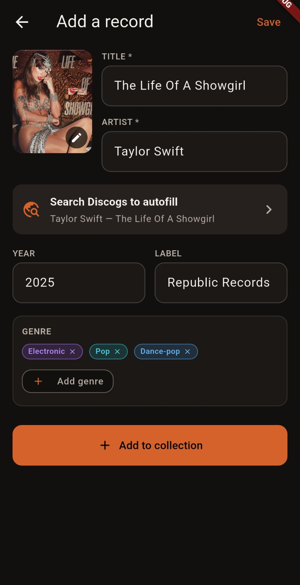
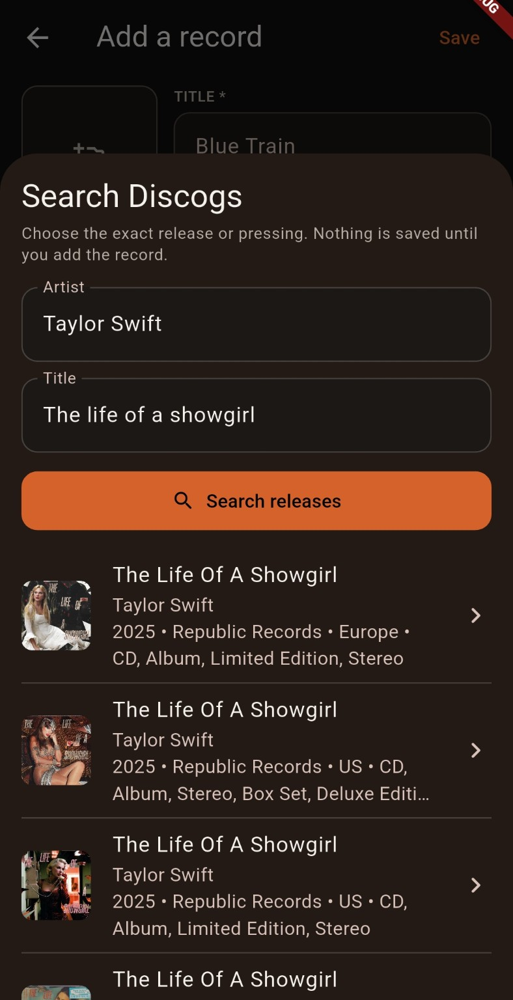

COLLECTION
Your shelves, organized.
Add and edit records, attach artwork, organize genres, and keep your collection accessible without depending on an online account.
1989 (Taylor's Version)Pop
A Love SupremeJazz
RumoursRock
Groovefolio brings your vinyl collection, listening history, stats, and discovery into one clean, local-first Android app.
Collection management, play logging, stats, Discogs metadata, and more.
A record collection should be more than a list.
What Groovefolio does
Groovefolio is being built around the physical collection first, with fast everyday workflows and useful listening context layered on top.
COLLECTION
Add and edit records, attach artwork, organize genres, and keep your collection accessible without depending on an online account.
LISTENING
Build a real listening history instead of guessing which records have actually been getting time on your turntable.
STATS
Turn plays into useful stats: favorites, listening trends, genre breakdowns, and the records that keep finding their way back to the platter.
DISCOGS
Search vinyl releases through Discogs, choose the right pressing, and autofill record details while keeping everything editable.
COMING NEXT
Collection import, tracklists, barcode lookup, NFC play logging, explainable recommendations, and a recommendation wishlist are on the roadmap.
In the app
Real Groovefolio development builds. More screenshots will be added as the app moves toward release.
01 / SEARCH

Search Discogs from Add Record and narrow results to vinyl releases.
02 / AUTOFILL

Artwork and metadata arrive prefilled, but every field stays editable before save.
Collection, Album Detail, Stats, and listening-history screenshots will be added as the showcase evolves.
Local-first by design
Groovefolio's core collection and listening data live locally on your device. A Groovefolio account is not required for the core app, and online integrations such as Discogs are optional enhancements rather than the foundation.
Roadmap
Groovefolio is actively being developed. The roadmap focuses first on getting real collections into the app, then building richer ways to log, understand, and discover music.
Connect Discogs, search vinyl releases, select a pressing, and populate Add Record.
Bring an existing Discogs collection into Groovefolio with duplicate review and local storage.
Add track-level data and make identifying physical releases faster.
Tap a tagged record to move from the shelf to a logged play with minimal friction.
Use collection, genre, artist, track, and play-history signals to suggest what to hear next—and explain why.
Coming to Android
The Android app is under active development as we build toward the first public release on Google Play.